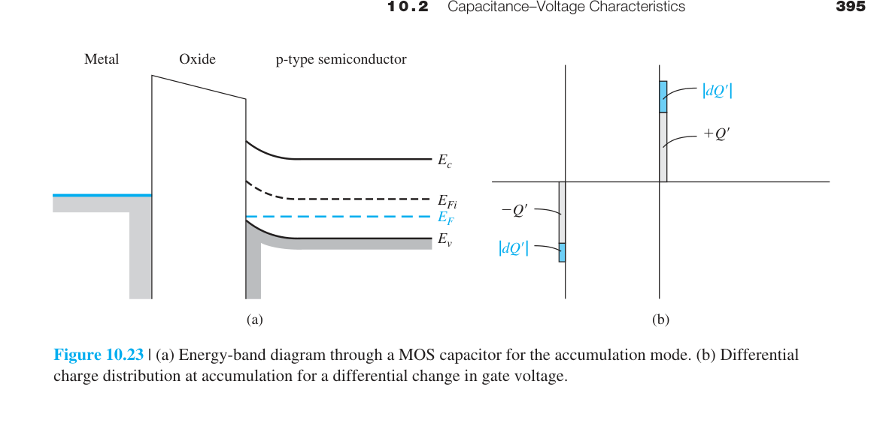
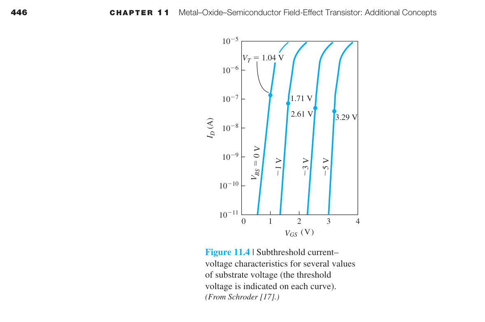
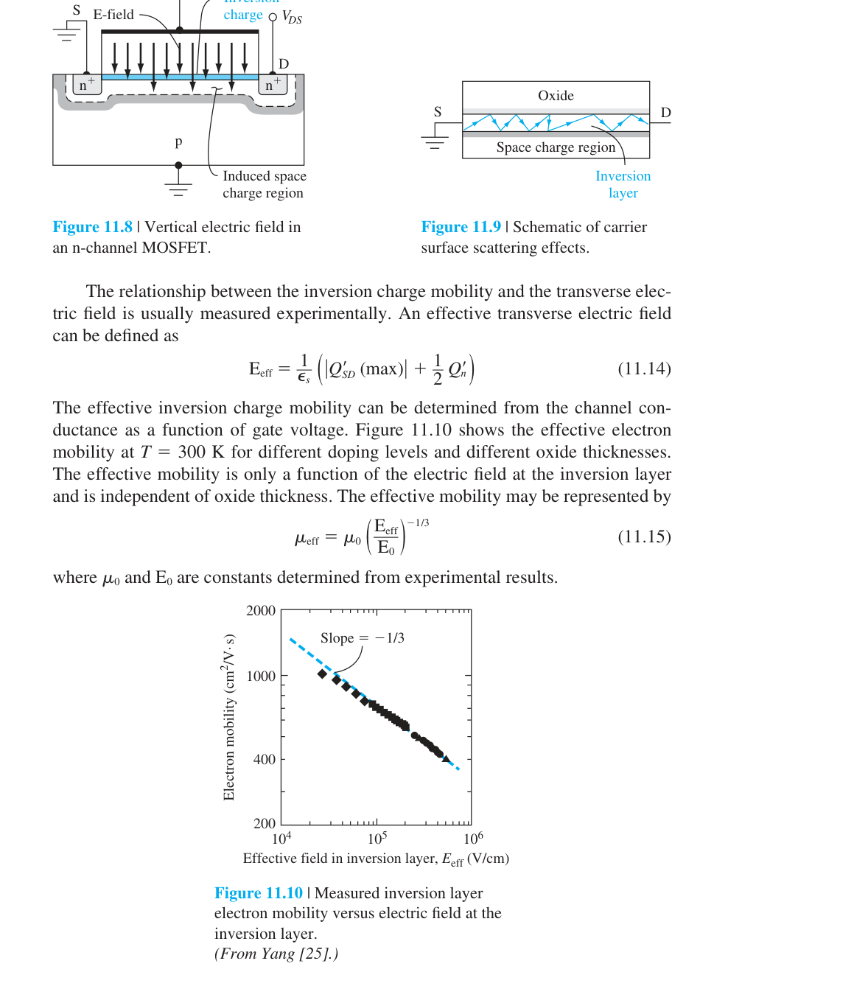
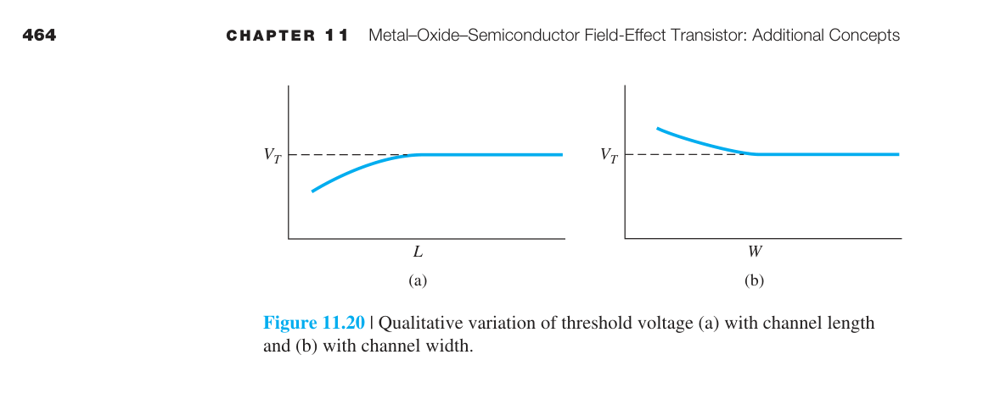

場效電晶體（MOSFET）
如果說 pn 接面是半導體物理中最基本的結構，那麼 MOSFET 就是半導體產業中最重要的元件。你手中的手機處理器、電腦 CPU、DRAM 記憶體、NAND Flash 儲存——這些晶片內部數十億至數兆個基本單元全部是 MOSFET。
MOSFET 的運作原理與 BJT（第十二章）截然不同。BJT 是電流控制元件——基極電流 $I_B$ 控制集極電流 $I_C$。MOSFET 是電壓控制元件——閘極電壓 $V_{GS}$ 透過氧化層電容靜電控制通道的導電性，閘極幾乎不消耗直流電流（$I_G\approx0$）。這個根本差異使 MOSFET 在數位電路中遠優於 BJT：零靜態輸入電流→零靜態功耗（理想上）→可以堆積數十億個電晶體在一個晶片上。
2. 臨界電壓 $V_T = V_{FB}+2\\phi_f+\\sqrt{4e\\varepsilon_s N_a\\phi_f}/C_{ox}$——通道開始形成的閘極電壓
3. 平帶電壓 $V_{FB}=\\phi_{ms}-Q_{ss}/C_{ox}$——氧化層電荷和功函數差使 $V_T$ 偏離理想
4. C-V 曲線是 MOS 的「指紋」：累積→$C=C_{ox}$，空乏→$C$↓，反轉→低頻回復 $C_{ox}$ / 高頻飽和 $C_{min}$
5. 線性區 $I_D=\\mu_n C_{ox}(W/L)[(V_{GS}-V_T)V_{DS}-V_{DS}^2/2]$
6. 飽和區 $I_D=(\\mu_n C_{ox}/2)(W/L)(V_{GS}-V_T)^2$——平方律，$I_D$ 與 $V_{DS}$ 無關（理想）
7. 跨導 $g_m=\\partial I_D/\\partial V_{GS}$——飽和區 $g_m=\\mu_n C_{ox}(W/L)(V_{GS}-V_T)$
8. Body effect：$V_{SB}>0$→$V_T$ 升高→$I_D$ 降低
9. CMOS：n-MOS + p-MOS 互補→零靜態功耗（理想）→數位邏輯的基石
10. 截止頻率 $f_T=g_m/[2\\pi(C_{gs}+C_{gd})]$——Miller 效應使 $C_{gd}$ 被放大 $(1+A_v)$ 倍

10.1.1–10.1.2 MOS 結構與氧化層電容

一個 n 通道增強型 MOSFET 的核心結構是四層堆疊：金屬（或重摻雜多晶矽）閘極 / 氧化物（SiO₂）絕緣層 / p 型矽基板 / n⁺ 源極和汲極區域。這四層的縮寫 M-O-S 賦予了這個元件它的名字。

「場效」的本質——為什麼閘極不消耗電流？MOSFET 的閘極和通道之間有一層絕緣的氧化層。在直流條件下，氧化層不導電→$I_G=0$。閘極完全靠靜電感應（電場效應）來控制通道中的載子濃度——就像你用一根帶靜電的塑膠棒靠近碎紙屑，紙屑被吸引而不需要任何電流流動。這是 MOSFET 與 BJT 最根本的差別：BJT 的基極需要持續注入電流來補充復合損失（$I_B\neq0$）；MOSFET 的閘極只需充電一個電容器（$C_{ox}$），充完之後就不需要再供電。
氧化層電容——MOSFET 最重要的結構參數
$C_{ox}$ 是單位面積的氧化層電容。$\epsilon_{ox}=3.9\epsilon_0=3.45\times10^{-13}$ F/cm。$t_{ox}$ 越小→$C_{ox}$ 越大→給定 $V_{GS}$ 能感應更多的反轉層電荷→$I_D$ 越大。
$t_{ox}$ 的演進史就是 Moore 定律的縮影：1970 年代 $t_{ox}\sim100$ nm→1990 年代 $t_{ox}\sim10$ nm→2010 年代 $t_{ox}\sim1.2$ nm（僅約 4–5 層 SiO₂ 分子！）。當 $t_{ox}$ 縮小到 ∼1 nm 時，量子穿隧效應使電子可以直接穿過氧化層→閘極漏電流急劇增大（從 ∼10⁻¹² A 增加到 ∼10⁻⁶ A）→待機功耗失控。這就是 2007 年 Intel 從 SiO₂ 轉向 high-κ 材料（HfO₂，$\kappa\sim25$）的原因：$\kappa$ 提高 6 倍→可用 6 倍厚的物理厚度達到相同的等效電容→穿隧漏電流以指數衰減（$\propto e^{-t_{ox}}$）→功耗大幅降低。
平帶電壓 $V_{FB}$——能帶彎曲的起點
即使 $V_{GS}=0$，能帶也可能有彎曲——因為金屬（或多晶矽）閘極和半導體的功函數不同。$V_{FB}$ 是使能帶恢復平坦（無彎曲、無空乏、無反轉）所需的閘極電壓：$V_{FB} = \phi_{ms} - Q_f/C_{ox}$。對 n⁺ 多晶矽閘極 / p 型 Si 基板：$\phi_{ms}\approx-0.9$ V→$V_{FB}$ 約為 −0.9 V。這意味著即使 $V_{GS}=0$，能帶也已經向下彎曲，p 型表面已處於空乏狀態。
10.1.3–10.1.5 能帶彎曲的三個階段——空乏到反轉
當你從 $V_{GS}=V_{FB}$ 開始慢慢增加閘極電壓時，p 型矽表面經歷三個截然不同的狀態——這三個狀態是理解 MOSFET 運作的關鍵。

階段一：空乏（$V_{FB}
正的閘極電壓排斥 p 型基板中的多數載子（電洞），在表面留下一層不可移動的負受體離子——這就是空乏層。電場從閘極正電荷出發，終止在空乏層的負離子上。此時表面雖有少量電子（因為能帶向下彎曲，$E_c$ 更靠近 $E_F$），但電子濃度仍遠小於 $N_a$。
空乏層的電荷密度隨表面電位 $\phi_s$ 增加而增加：$Q_d = -\sqrt{2\epsilon_s e N_a\phi_s}$。空乏層寬度 $x_d = \sqrt{2\epsilon_s\phi_s/(eN_a)}$。表面電位 $\phi_s$ 越大→空乏層越深→需要支付的閘極電壓越多。
階段二：弱反轉（$\phi_s$ 接近 $2\phi_f$）
當 $\phi_s > \phi_f$ 時，表面電子濃度開始超過電洞濃度——表面已從 p 型反轉為 n 型。但電子濃度仍遠小於 $N_a$→通道導電性極弱。
階段三：強反轉（$\phi_s = 2\phi_f$，$V_{GS}=V_T$）
當表面能帶彎曲達到 $2\phi_f$ 時，表面電子濃度 $=N_a$（與基板摻雜相等）→形成n 型反轉層→一個連接源極和汲極的導電通道正式建立。此時若再加閘極電壓，額外的電壓只用於增加反轉層中的電子數量（$Q_n$），而空乏層不再增寬（達到最大寬度 $x_{d,\max}$）。
💡 $2\phi_f$ 的物理意義：在 p 型基板中，$E_F$ 比 $E_{Fi}$（本徵 Fermi 能階）低 $\phi_f$。要使表面從 p 型變成 n 型，$E_{Fi}$ 必須在表面處跨過 $E_F$ 並繼續向 $E_c$ 移動。當表面的 $E_{Fi}$ 比 $E_F$ 高 $\phi_f$ 時（即表面 $E_{Fi}-E_F=+\phi_f$，而體內 $E_{Fi}-E_F=-\phi_f$），總彎曲量正好是 $2\phi_f$。此時表面電子濃度 $n_s=n_i e^{\phi_f/kT}=N_a$——與體內的電洞濃度相等。這就是「強反轉」的精確定義。
正的閘極電壓排斥 p 型基板中的多數載子（電洞），在表面留下一層不可移動的負受體離子——這就是空乏層。電場從閘極正電荷出發，終止在空乏層的負離子上。此時表面雖有少量電子（因為能帶向下彎曲，$E_c$ 更靠近 $E_F$），但電子濃度仍遠小於 $N_a$。
空乏層的電荷密度隨表面電位 $\phi_s$ 增加而增加：$Q_d = -\sqrt{2\epsilon_s e N_a\phi_s}$。空乏層寬度 $x_d = \sqrt{2\epsilon_s\phi_s/(eN_a)}$。表面電位 $\phi_s$ 越大→空乏層越深→需要支付的閘極電壓越多。
階段二：弱反轉（$\phi_s$ 接近 $2\phi_f$）
當 $\phi_s > \phi_f$ 時，表面電子濃度開始超過電洞濃度——表面已從 p 型反轉為 n 型。但電子濃度仍遠小於 $N_a$→通道導電性極弱。
階段三：強反轉（$\phi_s = 2\phi_f$，$V_{GS}=V_T$）
當表面能帶彎曲達到 $2\phi_f$ 時，表面電子濃度 $=N_a$（與基板摻雜相等）→形成n 型反轉層→一個連接源極和汲極的導電通道正式建立。此時若再加閘極電壓，額外的電壓只用於增加反轉層中的電子數量（$Q_n$），而空乏層不再增寬（達到最大寬度 $x_{d,\max}$）。
10.1.6 臨界電壓 $V_T$ 的完整推導 ⭐
$V_T$ 是 MOSFET 最重要的參數——它決定了電晶體何時開始導通。以下是從閘極電壓方程式到 $V_T$ 的完整推導。
閘極電壓方程式：任何閘極電壓 $V_G$ 都分攤在三處——氧化層上的壓降 $V_{ox}$、半導體表面電位 $\phi_s$（能帶彎曲量）、以及金屬-半導體功函數差 $\phi_{ms}$：
其中 $Q_d$ = 空乏層電荷（負值），$Q_n$ = 反轉層電子電荷（負值）。負號來自電荷守恆——閘極上的正電荷必須被半導體側的總負電荷（空乏層 + 反轉層）平衡。
強反轉條件（定義 $V_T$）：$\phi_s = 2\phi_f$，$Q_n\approx0$（剛好開始強反轉，反轉層電荷還極少），$Q_d = Q_{d,\max} = -\sqrt{4\epsilon_s e N_a\phi_f}$。
同時平帶時（$\phi_s=0$，$Q_d=0$，$Q_n=0$），$V_G = \phi_{ms} - Q_f/C_{ox} \equiv V_{FB}$（$Q_f$ = 氧化層固定電荷）。移項後代回：
數值計算（n⁺ 多晶矽閘極 / p-Si, $N_a=10^{17}$ cm⁻³, $t_{ox}=10$ nm）：
- $C_{ox}=3.45\times10^{-13}/10^{-6}=3.45\times10^{-7}$ F/cm²
- $\phi_f=0.0259\ln(10^{17}/1.5\times10^{10})=0.407$ V → $2\phi_f=0.814$ V
- $Q_{d,\max}=\sqrt{4\cdot1.04\times10^{-12}\cdot1.6\times10^{-19}\cdot10^{17}\cdot0.407}=1.03\times10^{-7}$ C/cm²
- $Q_{d,\max}/C_{ox}=1.03\times10^{-7}/3.45\times10^{-7}=0.299$ V ≈ 0.30 V
- $V_{FB}\approx-0.9$ V → $V_T=-0.9+0.814+0.30=0.21$ V
這個 $V_T$ 太低（僅 0.21 V），會導致電晶體難以關斷（OFF 漏電流過大）。因此實際製程會透過通道離子植入來提高 $V_T$：植入額外的 p 型雜質（硼）→有效 $N_a$ 增加→$Q_{d,\max}$ 增大→第三項增大→$V_T$ 提高至 0.4–0.7 V。

10.2 電容-電壓（C-V）特性——MOS 結構的指紋
MOS 電容結構是 MOSFET 的心臟，而電容-電壓（C-V）特性是表徵氧化層品質、界面態密度、和摻雜濃度最強大且最常用的工具。C-V 測量原理非常簡單：對 MOS 電容施加一個緩慢變化的 DC 閘極電壓 $V_G$，同時疊加一個小振幅的 AC 訊號（頻率通常為 5 Hz–1 MHz），測量小訊號電容 $C = dQ/dV$ 隨 $V_G$ 的變化。整條 C-V 曲線的形狀、位置、和頻率響應攜帶著關於 MOS 結構的豐富資訊——半導體工程師常說：「C-V 曲線是 MOS 結構的指紋。」
理想 C-V 曲線的三個工作區域
對一個 p 型基板的 MOS 電容，隨著 $V_G$ 從負到正掃描，半導體表面經歷三種截然不同的狀態，對應 C-V 曲線上的三個區域：
① 累積區（Accumulation，$V_G < V_{FB}$）：當閘極電壓為足夠大的負值時，p 型基板中的多數載子（電洞）被吸引到氧化物-半導體界面，形成一層薄薄的電洞累積層。此時 AC 小訊號引起的微分電荷變化完全發生在氧化層的兩側（金屬閘極和累積層），就像一個標準的平行板電容器。因此單位面積電容就等於氧化層電容：
這給出了 C-V 曲線上的最大電容值。$\epsilon_{ox} = 3.9\epsilon_0 = 3.45 \times 10^{-13}$ F/cm（SiO₂ 的介電常數），$t_{ox}$ 是氧化層物理厚度。
② 空乏區（Depletion，$V_{FB} < V_G < V_T$）：當 $V_G$ 超過 $V_{FB}$ 後，正的閘極電壓開始排斥界面處的電洞，在表面形成一層不可移動的負受體離子——這就是空乏層。此時等效電路是氧化層電容 $C_{ox}$ 和空乏層電容 $C_{SD}$ 的串聯。空乏層電容為 $C_{SD} = \epsilon_s / x_d$，其中 $x_d$ 是隨 $V_G$ 增加而變寬的空乏層寬度。串聯後的總電容為：
隨著 $V_G$ 增加→$x_d$ 增寬→$C_{SD}$ 減小→總等效電容單調下降。這是 C-V 曲線上從 $C_{ox}$ 向下傾斜的部分。斜率的大小反映了基板摻雜濃度 $N_a$：$N_a$ 越高→$x_d$ 增長越慢→電容下降越緩。
③ 反轉區（Inversion，$V_G > V_T$）：當 $V_G$ 超過臨界電壓後，表面形成 n 型反轉層。但 C-V 的行為完全取決於 AC 訊號的頻率。在低頻（約 5–100 Hz）下，反轉層中的少數載子（電子）有足夠的時間透過擴散和產生-復合過程來跟隨 AC 訊號的變化→微分電荷變化再次發生在氧化層兩側→電容回到 $C_{ox}$。此時空乏層寬度固定在最大值 $x_{dT}$，不再變化。在高頻（約 1 MHz）下，少數載子的產生-復合速率跟不上 AC 訊號的快速變化→反轉層電荷無法及時響應→微分電荷變化退回到發生在空乏層的邊緣（類似空乏區的情況）→電容保持在最小值 $C_{\min}$：
其中 $x_{dT}$ 是強反轉開始時的最大空乏層寬度：$\displaystyle x_{dT} = \sqrt{\frac{4\epsilon_s \phi_f}{e N_a}}$。
高頻 vs 低頻 C-V：少數載子的響應時間
為什麼高頻和低頻的 C-V 曲線在反轉區有如此巨大的差異？關鍵在於反轉層中少數載子的來源。要改變反轉層的電子濃度，有兩個機制：(1) 從 p 型基板內部通過空乏區擴散過來的少數載子電子——這個過程與反向偏壓 pn 接面的理想反向飽和電流相同；(2) 空乏區內的熱產生（generation）——產生電子-電洞對，電子被掃入反轉層，電洞被掃入基板。這兩個過程都需要時間：少數載子的產生率由材料品質決定，無法在 MHz 頻率下即時響應。
在極限高頻下，反轉層電荷完全不響應→微分電荷變化發生在金屬閘極和空乏層內緣（空間電荷區的邊緣）→等效電容就是 $C_{\min}$。在典型的實驗室 C-V 測量中，高頻 C-V 是最常測量的——它給出 $C_{\min}/C_{ox}$ 比值（由 $t_{ox}$ 和 $N_a$ 決定）以及 $V_{FB}$ 的位置。高低頻曲線之間的差異（稱為「C-V 伸展」或 stretch-out）則反映了界面態密度 $D_{it}$——界面態的佔據狀態隨 $V_G$ 緩慢變化，相當於一個與頻率相關的額外電容。
平帶電容 $C_{FB}$——從 C-V 曲線提取 $t_{ox}$ 的關鍵
C-V 曲線上還有一個重要的參考點：平帶電容 $C_{FB}$——當 $V_G = V_{FB}$（能帶完全平坦，無空乏也無累積）時的電容值。$C_{FB}$ 位於累積區和空乏區之間的過渡區域。當 $V_G$ 恰好等於平帶電壓時，半導體內部沒有能帶彎曲→沒有空間電荷→但半導體表面附近仍然存在一個非常薄的「Debye 長度」尺度內的載子重新分布。$C_{FB}$ 的定量公式為：
注意 $C_{FB}$ 取決於氧化層厚度 $t_{ox}$ 和基板摻雜 $N_a$。對於典型的 MOS 電容參數（例如 $t_{ox}=18$ nm，$N_a=10^{16}$ cm⁻³），計算可得 $C_{FB}/C_{ox} \approx 0.57$，$C_{\min}/C_{ox} \approx 0.15$。這兩個比值是 C-V 分析中常用的參考數據。一旦從 C-V 曲線上找到 $C_{FB}$ 對應的電壓，就等於確定了 $V_{FB}$，進一步可以推算金屬-半導體功函數差和氧化層固定電荷密度。
互動模型｜MOS 電容與高低頻 C–V
調整閘極電壓、基板摻雜、氧化層厚度與量測頻率，比較累積、空乏及反轉時的能帶彎曲與小訊號電容。模型採理想一維 MOS 電容與空乏近似。
🎛️ 開啟 MOS C–V 互動模型收合 MOS C–V 互動模型V_G、N_A、t_ox、頻率 → 能帶與 C–V
10.3.1–10.3.3 線性區 I-V 關係的完整推導 ⭐
當 $V_{GS}>V_T$ 且 $V_{DS}$ 很小時，反轉層通道就像一個電壓控制的電阻。以下是從反轉層電荷出發，逐步推導至 $I_D$ 公式的完整過程。
第一步：通道中任意點的電荷。在通道中距離源極 $y$ 處，該點的通道電位為 $V(y)$（源極端 $V(0)=0$，汲極端 $V(L)=V_{DS}$）。該點的有效閘極控制電壓為 $V_{GS}-V_T-V(y)$——因為 $V(y)$ 抵消了一部分閘極電壓。單位面積的反轉層電荷：
（負號表示電子帶負電；括號中只取超過 $V_T$ 的部分，因為低於 $V_T$ 時通道尚未形成。）
第二步：通道中的漂移電流。通道中的電場沿 $y$ 方向：$E_y = -dV/dy$。電子在通道中的漂移速度 $v_y = -\mu_n E_y = \mu_n(dV/dy)$（負負得正——電子從低電位漂向高電位，即從源極漂向汲極）。通道中 $y$ 處的電流：
$W$ 是通道寬度。$I_D$ 在通道中每一點都相等（電流連續性，沒有電流在半路消失）。
第三步：從 $y=0$ 積分到 $y=L$。將含 $y$ 的項分離到左邊、含 $V$ 的項分離到右邊，然後積分：
10.3.3–10.3.4 飽和區——通道夾止與平方律 ⭐
當 $V_{DS}$ 增加到 $V_{GS}-V_T$ 時，汲極端的有效閘極控制電壓降為零：$V_{GS}-V_T-V_{DS}=0$→$Q_n(L)=0$。通道在汲極端夾止（pinch-off）——該處的反轉層厚度變為零。

將 $V_{DS}=V_{GS}-V_T$ 代入線性區公式，得到飽和區電流：
夾止之後是什麼？$V_{DS}$ 繼續增加→夾止點（$V=V_{GS}-V_T$ 處）向源極移動一小段距離 $\Delta L$。額外的 $V_{DS}$ 全部降落在夾止點與汲極之間的空乏區中（該區域沒有通道）。由於通道長度從 $L$ 變為 $L-\Delta L$，$I_D$ 輕微增加——這就是通道長度調變（channel length modulation）：
$V_A$ 類似 BJT 的 Early 電壓。對長通道元件 $V_A$ 很大（飽和區很平）；對短通道元件 $V_A$ 較小（輸出電阻較低）。
互動模型｜MOSFET 通道、輸出特性與 pinch-off
同步觀察反轉電荷沿通道變薄、線性區到飽和區的轉換，以及夾止後電流為何不會消失。模型使用理想長通道平方律並提供一階通道長度調變。
🎛️ 開啟通道與 pinch-off 模型收合通道與 pinch-off 模型V_GS、V_DS、V_T → Q_i(x)、I_D 與工作區域
10.3.5 基板偏壓效應（Body Effect）⭐
前面的 $V_T$ 推導假設源極和基板（substrate）接地（$V_{BS}=0$）。但在實際電路中，源極和基板的電位常常不同——例如在 CMOS 反相器中，nMOS 的基板接地但源極可能不為零。
當 $V_{BS}<0$（對 nMOS，基板相對源極為負偏壓）時，基板-通道接面的空乏區變寬→更多的空間電荷 $Q_{B0}$ 需要被閘極電壓「覆蓋」→$V_T$ 升高：
最後一項就是基板偏壓的貢獻。當 $V_{BS}=0$ 時回到原本的 $V_T$ 公式。$V_{BS}$ 越負→$V_T$ 越高→$I_D$ 越小。
Body effect 係數 $\gamma$：將 $V_T$ 變化簡化為：
$\gamma$ 的典型值：$t_{ox}=10$ nm，$N_a=10^{16}$ cm$^{-3}$→$\gamma \approx 0.4$ V$^{1/2}$。$V_{BS}=-3$ V 時：$\Delta V_T \approx 0.4\times(\sqrt{0.6+3}-\sqrt{0.6}) \approx 0.4\times(1.9-0.77) \approx 0.45$ V——$V_T$ 升高了 0.45 V，對低壓電路影響顯著。
10.4 頻率限制——MOSFET 能跑多快？
當 MOSFET 用於線性放大器或高速數位電路時，其頻率響應受到內部電容充放電和載子渡越時間的雙重限制。要定量分析這些限制，首先需要建立一個包含所有寄生電容和電阻的小訊號等效電路。本節從等效電路出發，推導 Miller 效應、截止頻率 $f_T$、以及物理渡越時間，完整回答「MOSFET 到底能跑多快」這個核心問題。
10.4.1 小訊號等效電路——寄生元件的物理來源
在飽和區操作的 n 通道共源極 MOSFET，其完整的小訊號等效電路包含以下關鍵元件，每一個都有明確的物理來源：
輸入（閘極-源極）總電容 $C_{gsT}$：由兩部分組成——(1) 本徵電容 $C_{gs}$：來自閘極對通道中反轉層電荷的靜電耦合。在飽和區，通道電荷分布不均（源極端最濃、汲極端夾止→電荷為零），對閘極電壓變化而言，等效電容約為 $C_{gs} \approx \frac{2}{3}C_{ox}WL$。(2) 重疊電容 $C_{gsp}$：由於製程中的對準公差，閘極氧化層會稍微覆蓋源極的 n⁺ 擴散區域，形成額外的邊緣電容。總輸入電容 $C_{gsT} = C_{gs} + C_{gsp}$。
回授（閘極-汲極）總電容 $C_{gdT}$：同樣由本徵電容 $C_{gd}$ 和重疊電容 $C_{gdp}$ 組成。在飽和區，通道在汲極端夾止→閘極與汲極之間沒有通道電荷的耦合→$C_{gd} \approx 0$。但 $C_{gdp}$（閘極-汲極重疊電容）仍然存在，且跨接在輸入和輸出之間。這個看似微小的電容，由於 Miller 效應，對高頻性能有致命的放大作用。
輸出電容 $C_{ds}$：汲極與基板之間的 pn 接面空乏層電容。反偏壓越大→空乏區越寬→$C_{ds}$ 越小。在飽和區，汲極端電壓較高，$C_{ds}$ 通常較小。
跨導 $g_m$ 與輸出電阻 $r_o$：$g_m = \partial I_D/\partial V_{GS} = \mu_n C_{ox}(W/L)(V_{GS}-V_T)$——閘極電壓控制汲極電流的效率。$r_o = (\partial I_D/\partial V_{DS})^{-1} \approx V_A/I_D$——來自通道長度調變效應，反映 $I_D$ 隨 $V_{DS}$ 微增的量。對長通道元件 $r_o$ 很大（數十 kΩ 以上）；短通道元件因 DIBL 效應 $r_o$ 明顯減小。
串聯電阻 $r_s$ 和 $r_d$：源極和汲極的接觸電阻和擴散區域電阻。$r_s$ 特別重要，因為它直接降低有效的 $V_{GS}$：$V_{gs}' = V_{gs} - I_d r_s$→等效跨導降為 $g_m' = g_m/(1+g_m r_s)$。
Miller 效應——小電容如何變成大災難
$C_{gdT}$（特別是其中的重疊電容 $C_{gdp}$）跨接在輸入（閘極）和輸出（汲極）之間。在共源極放大器中，汲極電壓的擺幅是閘極電壓擺幅的 $-A_v$ 倍（$A_v = g_m R_L$ 是電壓增益，負號表示反相）。因此，跨在 $C_{gdT}$ 兩端的電壓變化為：
這意味著要對 $C_{gdT}$ 充放電，需要比單純對地電容多 $(1 + A_v)$ 倍的電流。從輸入端看進去的等效 Miller 電容為：
因此，MOSFET 的總輸入電容為：
數值感受 Miller 效應的嚴重性：假設一個 nMOS 有 $C_{gdT} = 0.5$ fF（看似微不足道）、$g_m = 1$ mS、負載 $R_L = 100$ kΩ→增益 $A_v = 100$→$C_M = 0.5 \times (1+100) = 50.5$ fF。也就是說，$C_{gdT}$ 被放大了 101 倍！在 $C_{gsT}$ 本身只有 ∼10 fF 的情況下，$C_M$ 完全主導了輸入阻抗。這就是為什麼在高速 MOSFET 設計中，自對準（self-aligned）閘極製程（最小化重疊電容）和低負載阻抗（減小 $A_v$）對高頻性能至關重要。
截止頻率 $f_T$——電流增益降至 1 的頻率
$f_T$ 是衡量電晶體高頻能力的最重要品質因數（figure of merit），定義為短路電流增益 $|h_{21}| = |I_d/I_i|$ 降至 1（0 dB）時的頻率。從簡化的小訊號等效電路（忽略 $r_s$, $r_d$, $r_{ds}$, $C_{ds}$，保留輸入電容和 $R_L$ 作為負載），對輸入節點和輸出節點分別應用 Kirchhoff 電流定律：
輸入節點：$I_i = j\omega C_{gsT} V_{gs} + j\omega C_{gdT}(V_{gs} - V_d)$
輸出節點：$V_d/R_L + g_m V_{gs} + j\omega C_{gdT}(V_d - V_{gs}) = 0$
聯立消去 $V_d$，在 $\omega R_L C_{gdT} \ll 1$ 的條件下（對典型 MOSFET 通常成立），得到簡化後的輸入電流：
理想負載電流（短路條件下）為 $I_d = g_m V_{gs}$。電流增益的大小為：
設 $|I_d/I_i| = 1$ 解得 $f_T$：
其中 $C_G = C_{gsT} + C_M$ 是等效輸入閘極電容。在沒有重疊電容的理想 MOSFET（飽和區，$C_{gd} \approx 0$，$C_{gs} \approx C_{ox}WL$，忽略 $C_M$）中：
$f_T \propto 1/L^2$——這就是 Moore 定律的速度面。通道長度縮小一半→$f_T$ 增為四倍。$L$ 從 1 μm（1990 年代，$f_T \sim 10$ GHz）→100 nm（2000 年代，$f_T \sim 100$ GHz）→14 nm（2014，$f_T \sim 300$ GHz）→3 nm（2022，$f_T \sim 400$ GHz 以上），每一代製程不僅讓電晶體變小，還讓它變快四倍。
數值計算範例——從參數到 $f_T$
考慮一個 n 通道 Si MOSFET：$\mu_n = 400$ cm²/V·s，$L = 1$ μm，$V_{GS} = 3$ V，$V_T = 1$ V（過驅動電壓 = 2 V）。代入理想 $f_T$ 公式：
若改用更先進的參數：$\mu_n = 420$ cm²/V·s，$L = 0.12$ μm（120 nm，約 2005 年節點），$V_{GS} - V_T = 1.1$ V：
實際 MOSFET 的 $f_T$ 會低於理想值，因為重疊電容 $C_{gdp}$ 引入了額外的 Miller 乘數效應。例如，若 $C_{gdT}$ 的 Miller 貢獻使總輸入電容 $C_G$ 增為理想值的兩倍→$f_T$ 減半。此外，源極串聯電阻 $r_s$ 還會進一步降低有效 $g_m$，使 $f_T$ 再打折。
渡越時間 $\tau_t$——物理速度的終極限制
除了電容充放電時間外，還有一個更基本的物理限制：載子在通道中的渡越時間 $\tau_t$。如果載子以飽和漂移速度 $v_{sat}$ 穿過長度為 $L$ 的通道，則 $\tau_t = L/v_{sat}$。對於 Si 中的電子，$v_{sat} \approx 10^7$ cm/s。若 $L = 1$ μm→$\tau_t \approx 10$ ps→對應的最大頻率約 100 GHz。從等效電路的角度，渡越時間也可以表達為：
這正是 $f_T$ 公式的倒數（乘以 $1/2\pi$）：$f_T = 1/(2\pi\tau_t)$。$\tau_t$ 越小→$f_T$ 越高。從微觀物理來看，減少 $L$ 同時從三個方面提升了 $f_T$：渡越時間變短（$\tau_t \propto L^2$）、$g_m$ 增大（$g_m \propto 1/L$）、以及閘極面積減小→$C_g$ 變小（$C_g \propto WL$，$L$ 變小→面積變小）。
對於短通道元件（$L = 10$ nm→$\tau_t \approx 0.1$ ps→對應 ∼10 THz），渡越時間通常不是實際 MOSFET 頻率響應的瓶頸——閘極電容的充放電 RC 時間（由 $r_s + r_{ch}$ 和 $C_G$ 決定）遠大於渡越時間。真正限制 $f_T$ 的是 Miller 效應和寄生電阻，而非載子本身的飛行時間。
10.4 小訊號參數與頻率響應
跨導 $g_m$——MOSFET 的放大能力
MOSFET vs BJT 的 $g_m$ 效率比較：BJT：$g_m=I_C/V_T=38.5$ mS/mA（線性，每 mA 固定 38.5 mS）。MOSFET：$g_m=2I_D/(V_{GS}-V_T)$。若 $V_{GS}-V_T=0.3$ V→$g_m=6.7$ mS/mA；若過驅動電壓降到 0.1 V→$g_m=20$ mS/mA。MOSFET 的 $g_m$ 效率通常為 BJT 的 1/6 到 1/2。
但 MOSFET 的優勢在於零閘極電流——基極電流 $I_B=I_C/\beta$ 在 BJT 中不可忽略，而 MOSFET 的 $I_G=0$ 使它在高輸入阻抗應用（如運算放大器輸入級、電壓緩衝器）中無可比擬。
截止頻率 $f_T$——MOSFET 能跑多快
$f_T$ 是電晶體的電流增益（$i_d/i_g$）降至 1 的頻率：
$f_T\propto1/L^2$——通道長度縮小一半→$f_T$ 增為四倍。這就是為什麼每一代新製程都讓電晶體變得更快：$L$ 從 1 µm（1990）→100 nm（2000）→14 nm（2014）→3 nm（2022），$f_T$ 從 ∼10 GHz 提升到 ∼400 GHz。
10.4.1 MOSFET 小訊號等效電路
在飽和區操作的 MOSFET，小訊號等效電路包含以下元件：
受控電流源：$i_d = g_m v_{gs}$（閘極電壓控制汲極電流）。
輸入電容：$C_{gs} = \frac{2}{3}C_{ox}WL + C_{ov}$（$\frac{2}{3}$ 因子來自通道電荷的分布，$C_{ov}$ 是閘極-源極重疊電容）。
回授電容：$C_{gd} = C_{ov}$（在飽和區，閘極-汲極重疊區很小→$C_{gd}$ 很小，但 Miller 效應會放大它的影響）。
輸出電阻：$r_o = 1/(\lambda I_D) = V_A/I_D$（通道長度調變效應導致 $I_D$ 隨 $V_{DS}$ 微增→有限的輸出電阻）。
基板跨導：$g_{mb} = \chi g_m$（body effect：$V_{BS}$ 變化→$V_T$ 變化→$I_D$ 變化。$\chi = \gamma/(2\sqrt{2\phi_f-V_{BS}})$）。
10.5 CMOS 技術
CMOS（Complementary MOS）把 nMOS 和 pMOS 製作在同一個晶片上。核心優勢：靜態功耗幾乎為零——在穩態下，nMOS 和 pMOS 之中總有一個截止（$I_D=0$），只有在切換瞬間兩者同時導通時才有電流。
CMOS 反相器：pMOS 接 $V_{DD}$（上拉），nMOS 接 GND（下拉）。輸入高→nMOS 導通、pMOS 截止→輸出拉到 GND。輸入低→pMOS 導通、nMOS 截止→輸出拉到 $V_{DD}$。穩態時沒有從 $V_{DD}$ 到 GND 的直接通路→功耗只來自切換時的充放電（$P = CV_{DD}^2 f$）和微小的漏電流。
CMOS 的主流地位：自 1980 年代以來，CMOS 是數位積體電路的絕對主流（>99% 的邏輯晶片）。原因是功耗優勢——在有數十億電晶體的現代 SoC 中，如果用 NMOS 邏輯或 BJT 邏輯（TTL），靜態功耗會大到無法散熱。
11.3.1 短通道效應——當 $L$ 不再「長」
長通道 MOSFET 的理想公式（$V_T$ 與 $L$ 無關、$I_D$ 飽和後平坦）在 $L$ 縮小到 ∼100 nm 以下時開始失效。源極和汲極的電場開始分攤閘極對通道的控制——這就是短通道效應的根源。
DIBL（汲極引發能障降低）

在長通道中，源極端的能障完全由閘極控制。在短通道中，汲極的正電壓產生的電場穿透到源極側→降低了源極端的電子能障→電子更容易從源極流入通道→$V_T$ 隨 $V_{DS}$ 增加而下降。DIBL 使 OFF 電流（$V_{GS}=0$）增大→待機功耗上升。
次臨界斜率——MOSFET 開關的陡峭度
理想上 $V_{GS} 室溫下 $S$ 的物理下限是 60 mV/dec（來自 Boltzmann 統計 $kT/e\ln10=0.0259\times2.303=0.060$ V）。$S$ 越小→開關越陡峭→從 ON（$V_{GS}=0.7$ V）切到 OFF（$V_{GS}=0$ V）時 $I_D$ 降得越多。理想 $S=60$→$V_{GS}$ 降 0.3 V→$I_D$ 降 $10^5$ 倍。實際 $S=100$→同樣壓降只能降 $10^3$ 倍。這就是為什麼降低 $S$ 對降低漏電至關重要。
本章摘要
- MOSFET 結構：金屬閘極 + SiO₂氧化層 + Si 基板。電壓控制→零 DC 閘極電流→可堆積數十億個。
- 氧化層電容：$C_{ox}=\epsilon_{ox}/t_{ox}$。$t_{ox}$ 從 100 nm 縮到 ∼1 nm→high-κ(HfO₂)取代 SiO₂。
- 三階段：平帶→空乏（排斥電洞）→強反轉（$\phi_s=2\phi_f$，表面形成 n 型通道）。強反轉條件定義 $V_T$。
- $V_T$ 推導：$V_T=V_{FB}+2\phi_f+\sqrt{4\epsilon_s e N_a\phi_f}/C_{ox}$。通道離子植入精確調控 $V_T$。
- 線性區：$I_D=\mu_n C_{ox}(W/L)[(V_{GS}-V_T)V_{DS}-V_{DS}^2/2]$。低 $V_{DS}$→線性電阻。
- 飽和區：$I_D=\frac{1}{2}\mu_n C_{ox}(W/L)(V_{GS}-V_T)^2$。平方律。夾止後電流基本不變。
- $g_m$：$\mu_n C_{ox}(W/L)(V_{GS}-V_T)=2I_D/(V_{GS}-V_T)$。效率約 BJT 的 1/6–1/2，但 $I_G=0$。
- $f_T$：$\propto1/L^2$。$L$ 從 1 µm→3 nm，$f_T$ 從 ∼10 GHz→∼400 GHz。
- 短通道：DIBL 使 $V_T$ 隨 $V_{DS}$ 下降。$S\approx60(1+C_d/C_{ox})$ mV/dec。FinFET/GAAFET 是三維解決方案。
本章學習資源
第 10 章公式摘要 · 可驗算補充習題 · 章內例題
推導、假設與章末診斷
長通道 MOSFET 方程的完整假設
- 氧化層理想絕緣、界面電荷已吸收到 $V_{FB}$，閘極直流電流忽略。
- 強反轉、漸變通道近似 $|E_x|\ll|E_y|$、一維電荷片、均勻摻雜與準靜態操作。
- 遷移率常數、低橫向場、無速度飽和、無通道長度調變、源汲串聯電阻忽略。
- 邊界 $V(0)=0$、$V(L)=V_{DS}$；反轉電荷 $Q_i(x)=-C_{ox}[V_{GS}-V_T-V(x)]$。
中間推導：線性區到飽和區
- 通道電流 $I_D=-W\mu_nQ_i(x)dV/dx$，穩態下沿 $x$ 不變。
- 分離變數並從 $x=0\to L$、$V=0\to V_{DS}$ 積分。
- $I_D=\mu_nC_{ox}(W/L)[(V_{GS}-V_T)V_{DS}-V_{DS}^2/2]$。
- 令 $dI_D/dV_{DS}=0$ 得 $V_{DS,sat}=V_{GS}-V_T$，代回得 $I_{D,sat}=\frac12\mu_nC_{ox}(W/L)(V_{GS}-V_T)^2$。
章末練習與概念診斷
pinch-off 是否表示汲極電流變成零？
否。夾止點後的高場區把載子掃入汲極；理想長通道模型中電流進入飽和而非中斷。
5 nm MOSFET 為何不能直接套平方律？
漸變通道、常數遷移率與低場假設同時失效，速度飽和、彈道輸運、DIBL 與量子侷限都不可忽略。
延伸計算練習
完成上方診斷後，請在不查公式的情況下重建代表推導，並改變一個參數檢查極限行為。更多含數值與解答的題目：本章完整習題頁。